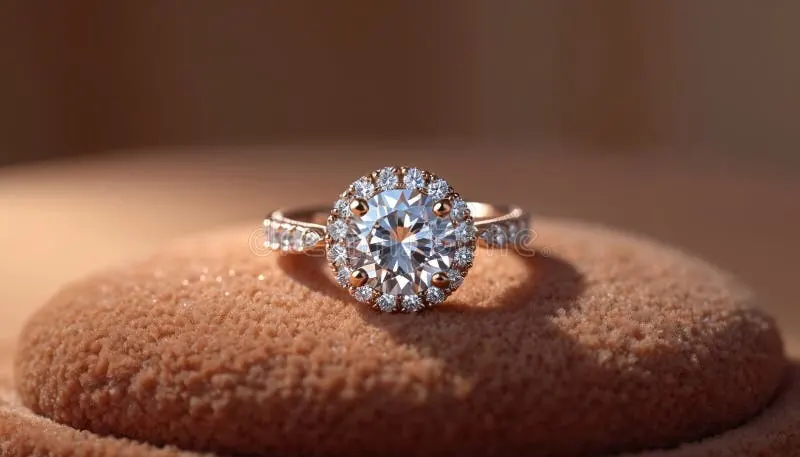
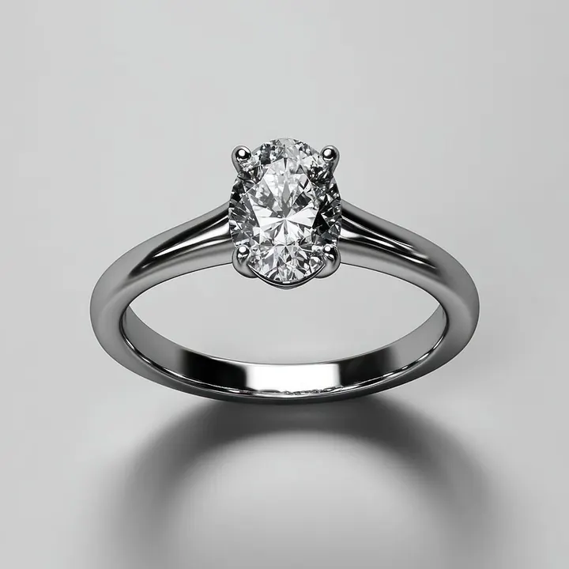

培育鑽石 vs 天然鑽石：肉眼無法分辨的戰爭
實驗室裡長出來的鑽石，和地底挖出來的在成分上零差別——這場「真假戰爭」，其實是一場定價與敘事之爭。


核心定義
培育鑽石（lab-grown diamond）是在實驗室中，用科技重現鑽石在地幔的生長條件而培育出的真鑽石——它與天然鑽石在化學（純碳）、晶體結構（立方晶系）、光學與物理性質上完全相同，硬度同為 10，折射率同為 2.417。它「不是仿品」，是名副其實的鑽石。
天然鑽石歷經數十億年地質過程，培育鑽石則在數週內完成生長。差異只在一件事：起源。而正是這個起源，造成兩者價格的鴻溝——培育鑽石常為天然鑽石的三到五折甚至更低。
特徵與分類
| 項目 | 天然鑽石 | 培育鑽石 |
|---|---|---|
| 化學成分 | 碳 C | 碳 C（完全相同） |
| 硬度/折射率 | 10 / 2.417 | 10 / 2.417 |
| 形成時間 | 數十億年 | 數週（HPHT/CVD） |
| 來源 | 地幔開採 | 實驗室培育 |
| 肉眼分辨 | 不可 | 不可 |
| 價格 | 基準 | 常為 30%～60% 甚至更低 |
培育鑽石也有完整的 4C 分級（GIA、IGA、IGI 等皆出具培育鑽報告），品質甚至常優於天然——因為實驗室可以控制生長條件，產出高淨度、高色階的比例更高。
科學原理
兩大培育技術：HPHT（高溫高壓法）模擬地幔條件，用金屬觸媒在約 1500°C、5～6 GPa 下讓碳從石墨或鑽石種晶上結晶；CVD（化學氣相沉積法）則在低壓反應腔中，把甲烷等含碳氣體分解，讓碳原子一層層沉積在鑽石種晶上。
如何區分兩者？肉眼不行，但實驗室可以：培育鑽石常有特徵生長紋（如 HPHT 的立方體生長帶、CVD 的層狀生長線）、特定的螢光型態與金屬內含物；再加上雷射刻字（lab-grown 標記），科學家能輕鬆鑑定來源。
鑑定與鑑別方法
- 看證書：培育鑽石報告會明確標示 Laboratory-Grown
- 放大找雷射刻字：腰圍常有「LAB-GROWN」字樣
- 紅外/紫外光譜：鑑定機構可測生長特徵（CVD 的 SiV 缺陷等）
- 顯微鏡找金屬內含物（HPHT 特徵）與生長紋
- 消費者最簡單的方法：送 GIA/IGI 等機構檢測
市場行情與保養建議
培育鑽石市場近年快速成長，價格持續下探，成為婚戒市場的強力選項。優點：價格親民、無開採倫理爭議、品質可控；缺點：轉手保值性差（二手市場接受度仍在建立）、部分消費者在意「天然」敘事。
選擇建議：預算有限或重視永續，培育鑽石是理性選擇；重視保值、傳承與天然稀有性，天然鑽石仍有其位置。兩者都是「真鑽石」，差別在你要的是故事還是數字。
常見誤區
錯誤。它與天然鑽石成分、結構、物理性質完全相同，是貨真價實的鑽石。把它當成仿鑽（CZ 那類）是最大的誤解——仿鑽不是碳，培育鑽是純碳。
培育鑽石性質穩定，與天然鑽石一樣耐戴；「不值錢」指的是二手轉售價低（因供應充足），不是品質問題。以自戴與日常珠寶而言，它完全稱職。
冷知識
1954 年奇異公司（GE）以 HPHT 法培育出第一批人工鑽石。但直到近年 CVD 技術成熟、成本下降，培育鑽石才真正撼動市場。
實驗室可以控制生長環境，產出近乎無氮的超純晶體，或是客製化顏色——這是地底隨機生長做不到的。
反直覺觀點
因為兩者都是鑽石。熱導儀、比重、折射率全數一致——只有進實驗室看生長特徵或雷射標記才能定論。這也意味著：市場上「保證天然」的敘事，最終要靠證書與機構把關，而不是你的眼睛。
培育鑽石的淨度與色階常優於同價位天然鑽。花一樣的錢，你可能買到更大的培育鑽或更小的天然鑽——「哪個比較好」不是品質問題，而是你對「起源」願意付多少錢。